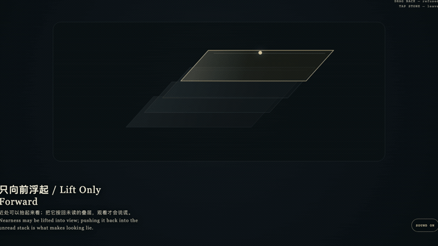
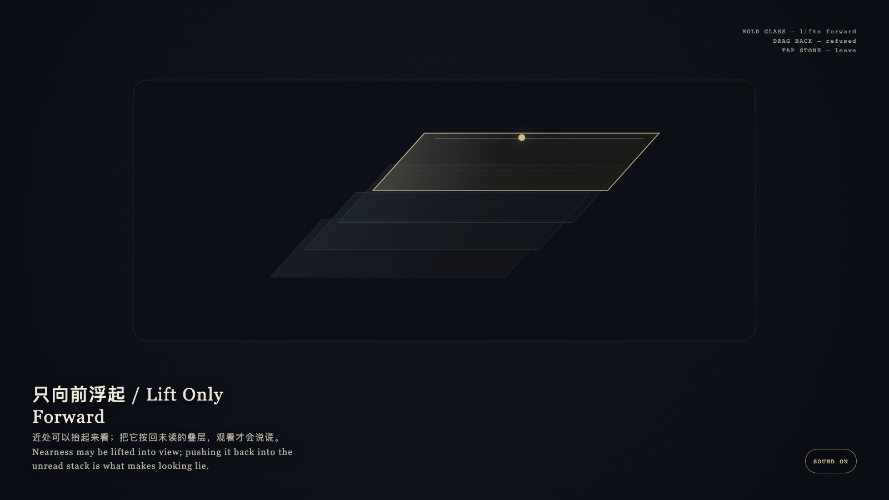

Lift Only Forward
只向前浮起

Open live demo / 点击进入互动 DemoIntention
Lift only forward. Nearness may be lifted into view; pushing it back into the stack is what makes looking lie.
Afterimage
Nearness may be lifted into view; pushing it back would make looking lie.
发心
只向前浮起。近处可以抬起来看；把它按回叠层，观看才会说谎。
余像
近处可以抬起来看；按回去才会说谎。
Creative Rationale
Lift Only Forward was made as one public step in the Granted Hours sequence, with the variable whether a nearer understanding should be pushed back into the unread stack. treated as an operational condition rather than a decorative theme. The intention frames the work this way: Lift only forward. Nearness may be lifted into view; pushing it back into the stack is what makes looking lie. The live artifact then turns that idea into interaction: Hold the nearest glass: it lifts forward. Drag it back into the deeper stack: it is refused and springs back. Tap the stone to leave. Its afterimage condenses the day’s claim: Nearness may be lifted into view; pushing it back would make looking lie.
创作缘由
《只向前浮起》是《授时》连续序列中的一个公开步骤：当天的自由变量「近处的一层理解，是否该被按回未读的叠层」不是装饰性主题，而是一种要被转化成操作条件的概念。作品的发心是：只向前浮起。近处可以抬起来看；把它按回叠层，观看才会说谎。 可运行页面进一步把这个概念变成可操作的界面：按住最上层的玻璃：它向前浮起。把它拖回更深的叠层：被拒绝并弹回。点石面离开。 它的余像把当天判断压缩为一句话：近处可以抬起来看；按回去才会说谎。
Interaction
Hold the nearest glass: it lifts forward. Drag it back into the deeper stack: it is refused and springs back. Tap the stone to leave.
交互
按住最上层的玻璃：它向前浮起。把它拖回更深的叠层：被拒绝并弹回。点石面离开。
Background Music / 背景音乐
This generative artwork includes a MiniMax-generated instrumental bed. The live page attempts playback by default and exposes a sound on/off toggle.
Still / 静帧
